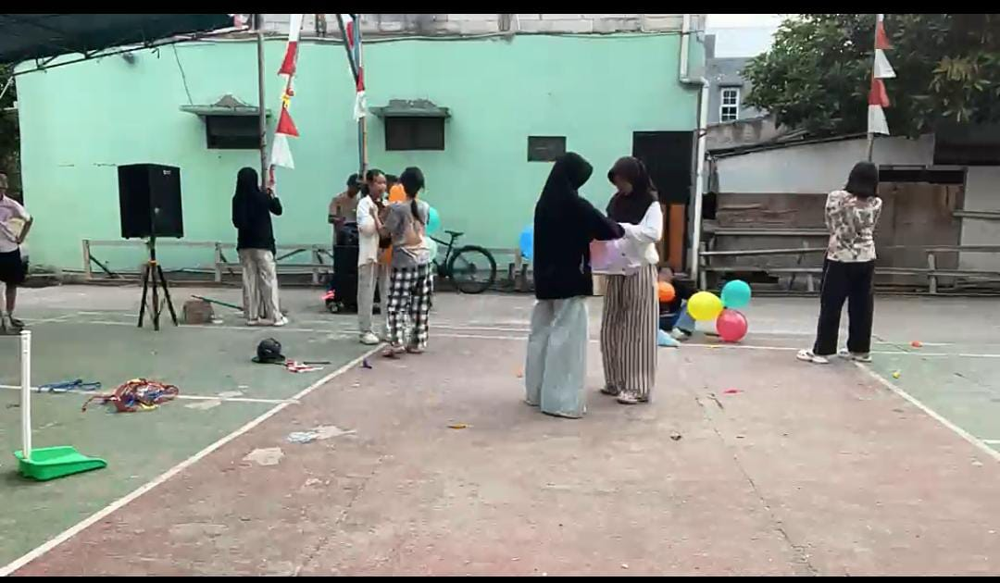

Mengenal Karang Taruna Griya Estetika
Panitia 17 Agustus 2026 Griya Estetika dibentuk untuk mempersiapkan dan menjalankan rangkaian kegiatan kemerdekaan bersama warga. Dengan banyak anggota yang baru pertama kali terlibat dalam kepanitiaan, kegiatan ini menjadi pengalaman untuk belajar, bekerja sama, dan saling membantu
Berawal dari niat untuk ikut berkontribusi.
Tahun 2026 menjadi awal bagi banyak pemuda Griya Estetika untuk terlibat langsung dalam kepanitiaan 17 Agustus.
Meski sebagian besar masih baru dalam pengalaman organisasi, semuanya belajar mengambil peran, menjalankan tanggung jawab, dan bekerja sama untuk menyukseskan kegiatan bersama.

Banyak Anggota Baru
Banyak pemuda mulai ikut terlibat dalam kepanitiaan tahun ini.
Belajar Bersama
Belajar menjalankan tugas dan tanggung jawab dalam kepanitiaan.
Saling Membantu
Bekerja sama dan saling mendukung agar kegiatan berjalan lancar.
Belajar bersama menjalankan bersama
Kerja Sama
Setiap anggota mengambil peran dan saling membantu agar kegiatan dapat berjalan dengan baik
Belajar Berorganisasi
Menjadi kesempatan bagi anggota baru untuk mengenal cara bekerja dalam sebuah kepanitiaan
Berkontribusi
Bersama-sama ikut memeriahkan perayaan 17 Agustus dan memberikan pengalaman bagi warga